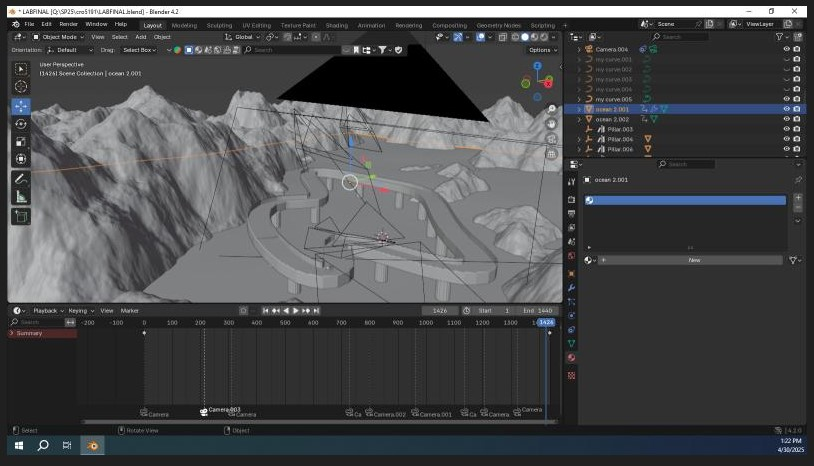

This class is taught by Mr. Hartung in the Burke Building at Behrend. He also teaches ART168 and DIGIT 409. In this project
we learned how to create
realistic motion in a complex animation software. I began this project by building racetrack pieces and
extending them with different attributes within Blender.
Then, I created detailed mountains with geometry nodes as well as animating
a snail, my subject, across the track.

This shows the snail's model up close. The head sways with time along with the antennas and tail. The head thrusts fowards and inches backward with its motion.
Here is the final product of my Blender animation. This took me weeks of class time to work on. The music completes the vibe of the video.